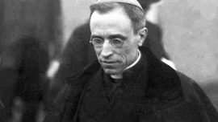
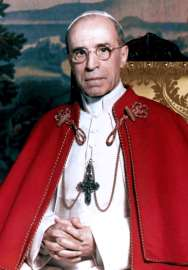

Le 4 mars 2019, le pape François a annoncé que le Vatican ouvrirait les fichiers secrets liés au pape Pie XII pendant la Seconde Guerre mondiale. Avant d’analyser et de commenter cette décision tardive du pape, voici quelques rappels historiques et observations: Le pape Pie XII, Eugenio Pacelli est issu d’une famille de diplomates. Il a vécu en Allemagne au moment où le nazisme a relevé la tête. Devenu pape, le 12 mars 1939, il est parfaitement au courant des persécutions des Juifs. Il sera informé par des évêques et notamment de Pologne sur le massacre systématique des Juifs. L’ambassadeur du Vatican à Varsovie, Casimir Papé, a écrit au pape: « les déportés sont mis à mort par différents procédés dans des lieux spécialement préparés à cette fin ». Le prêtre de Cracovie, Karol Wojtyla, (devenu en 1978, le pape Jean Paul II) a aidé et a protégé des familles juives pendant la guerre et s’est plaint que « des Polonais soient utilisés pour participer à l’extermination des Juifs ». En 1928, le Saint-Office a condamné, timidement, l’antisémitisme racial. En 1938, suite à son alliance avec Hitler, Mussolini signe le Pacte d’acier et suit le modèle antisémite allemand à la lettre. Cinquante mille Juifs italiens sont chassés de la vie publique, culturelle et financière et commencent à prendre le chemin de l’exil. Ils étaient installés à Rome depuis la destruction du Second Temple en l’an 70 de notre ère, et voilà qu’ils sont soudain indésirables, sur cette terre devenue au fil des siècles le foyer de l’émancipation des Juifs. Sur le sol qui abrite la cité du Vatican, les prières juives ne sont pas entendues et le pape fait la sourde oreille. En juin 1943, devant le Sacré-Collège, le pape Pie XII a parlé de « ceux qui, en raison de leur nationalité ou de leur race, sont accablés des plus grandes épreuves et parfois même destinés, sans faute personnelle, à des mesures d’extermination. » Il ne prononce aucune déclaration publique et n’entame pas une seule démarche diplomatique concrète en faveur des Juifs. La politique silencieuse du Vatican s’explique par la crainte de ne pas envenimer les relations avec l’Allemagne. Des démarches et protestations se sont souvent traduites par de violentes persécutions contre des prêtres polonais et allemands. A travers les siècles et particulièrement durant les années qui ont précédé la Deuxième Guerre mondiale, nous avons constaté que l’Eglise catholique et le Vatican n’ont pas souhaité la propagation des vagues d’antisémitisme. L’antisémitisme religieux, catholique, n’a jamais encouragé ou appelé à un génocide. Pour le Saint- Siège, Hitler considérait le pape comme son ennemi numéro 1 et une confrontation avec lui n’était pas souhaitable. Toutefois, l’antijudaïsme qui remonte à la crucifixion de Jésus (Yeshoah le juif), a laissé le Saint-Siège perplexe, voire indifférent, et l’antijudaïsme a sans doute inspiré l’idéologie nazie. Le Vatican aurait dû comprendre qu’après le “sacrifice” des Juifs, c’est l’Eglise tout entière qui sera la prochaine victime d’Hitler. En défendant les Juifs, les Chrétiens seront aussi épargnés. Rappelons aux croyants catholiques, Matthieu XXVII, 45-46: « Depuis la sixième heure jusqu’à la neuvième, il y eut des ténèbres sur toute la terre. Et vers la neuvième heure, Jésus s’écria d’une voix forte: Eli, Eli, lama schavaktani? C’est-à- dire: Mon Dieu, pourquoi m’as-tu abandonné? » Ce verset du Nouveau Testament, n’est-il pas identique au Psaume XXII de David: « Mon Dieu, mon Dieu, pourquoi m’as-tu abandonné, loin de me porter secours, d’entendre mes paroles suppliantes. » Ne sont-ils pas, effectivement, les mêmes versets adressés au même Dieu! Ces paroles de détresse avec le “Schéma Israël” ont été prononcées par les déportés dans le désespoir mortifiant des camps de la mort! Officiellement, personne n’a condamné rigoureusement les actes antisémites et les persécutions en Europe, et rien n’a été fait pour éviter la montée du fascisme et du dictateur Mussolini à Rome. Aucun pape, aucun cardinal, ni archevêque n’a mis en garde, publiquement, les fidèles chrétiens en dénonçant les vagues de racisme et d’antisémitisme. Tous ont gardé un mutisme complice, et se sont montré indifférents face à la montée d’Hitler et la publication de son idéologie antijuive. Rappelons que le pape Pie XI, a osé déclarer que « spirituellement, les catholiques sont des sémites ». Il a revendiqué, clairement, la filiation juive du christianisme. Depuis la Shoah, le Vatican a refusé d’ouvrir les archives de cette sombre époque. Cependant, il a révisé fondamentalement son attitude et s’est “réconcilié” avec les Juifs et le judaïsme. Ce n’est qu’en 1993, 45 ans après la création de l’Etat d’Israël que le Vatican, sous Jean Paul II, a noué des relations diplomatiques complètes et reconnaitra de facto et de jure, le droit des Juifs de retourner en Terre sainte et construire leur propre Etat. Jean Paul II comme son successeur Benoit XVI ainsi que le pape François, effectueront un voyage officiel en Israël et visiteront le mémorial de Yad Vashem.

Le 4 mars 2019, alors qu’il s’adressait à 75 responsables des archives secrètes du Vatican, le pape François a déclaré que l’Église « n’a pas peur de l’histoire, elle l’aime et veut l’aimer plus encore, tel que Dieu l’aime. » A l’occasion du 80e anniversaire de l’élection d’Eugenio Pacelli au trône de Saint- Pierre, le pape François a annoncé que le Vatican ouvrirait aux chercheurs les dossiers secrets relatifs au pontificat de Pie XII. « Avec la même confiance que mes prédécesseurs, j’ouvre et confie ce patrimoine documentaire à des chercheurs », a-t-il déclaré. En justifiant sa décision historique, le pape François a précisé: « J’ai pris cette décision après avoir entendu l’opinion de mes collaborateurs les plus proches, avec un esprit serein et confiant, persuadé qu’une recherche historique sérieuse et objective serait en mesure d’évaluer, de manière appropriée les moments louables du Pontife. Sans aucun doute cette époque a connu des moments de sérieuses difficultés, de décisions tourmentées, de prudence humaine et chrétienne, qui semblaient être pour certains des réticences et qui constituaient plutôt des tentatives, humainement et très durement combattues, de garder la flamme de la guerre humanitaire. Il y a eu en effet des initiatives lumineuses durant toute la période obscure et les cruautés abominables. La diplomatie, secrète mais active, a donné sans doute de l’espoir et a ouvert les cœurs. » 1 Depuis des décennies, les historiens demandent au Vatican d’ouvrir ses archives. Dans la mesure où cette initiative sera complètement achevée et ne sera pas sélective – qu’elle ne fera pas la lumière exclusivement sur les aspects positifs du pontificat de Pie XII – elle mérite sans doute d’être applaudie et considérée comme un tournant historique. Cependant, il existe plusieurs raisons d’être sceptique. Le Vatican tente depuis plusieurs années de béatifier Eugenio Pacelli, au grand dam de la communauté juive mondiale et des experts de la Shoah. Notons que les successeurs de Pacelli – Jean XXIII (1958-1963), Paul VI (1963-1978) et Jean-Paul II (1978-2005) étaient déjà canonisés. Mgr Sergio Pagano, conservateur des archives secrètes du Vatican, a publié le jour même des intentions du pape François, un article dans L’Osservatore Romano. Mgr Pagano justifie bien entendu la décision du pape et évoque le rôle difficile et ingrat de Pie XII avant la dernière guerre et pendant son déroulement tragique. Il déplore les « jugements et les critiques superficielles » à l’égard de son pontificat. Il souhaite que justice soit faite par les historiens, qui pourront désormais explorer les archives et découvrirons de nouveaux documents qui mettront en lumière tous les aspects de la conduite du pape durant la guerre. 2 Parmi les historiens qui ont déjà enquêté sur le pontificat de Pie XII figure John Cornwell. Ce chercheur au Jesus College de l’Université de Cambridge est auteur du célèbre livre Histoire secrète de Pie XII, publié en 1999. Cet historien a eu accès à des parties réservées des archives du Vatican concernant Eugenio Pacelli. 3 Le processus de béatification de Pie XII a débuté en 1964 dans un conflit interne entre progressistes et conservateurs. Le Concile Vatican II était à l’œuvre et les progressistes voulaient canoniser Jean XXIII. Le pape Paul VI a décidé de soumettre à l’examen de la Congrégation le texte controversé de Pie XII, ainsi que le projet de Jean XXIII. Le prêtre, Peter Gumpel, avait alors déclaré: « Après avoir étudié toutes les dépositions de tous les témoins de la cause de Pie XII, je peux dire que j’ai très rarement trouvé des preuves aussi convaincantes de la vertu héroïque du pape… » 4 En septembre 2000, devant 100 000 pèlerins rassemblés sur la place Saint-Pierre, Jean-Paul II a béatifié Jean XXIII et Pie IX. La communauté juive a applaudi la béatification du premier et a déploré la béatification du second. Au cours de son long pontificat (1846-1878), Pie IX a confiné les Juifs dans le ghetto de Rome, les a appelés publiquement « chiens hébreux » et a approuvé l’enlèvement d’un jeune Juif, Edgardo Mortara. Au début des années 1960, le pape Paul VI forma une équipe de prêtres de divers pays dans le but de sélectionner des documents diplomatiques de la période de la Seconde Guerre mondiale en possession du Saint-Siège. Le projet visait à contrecarrer les accusations concernant le silence du pape pendant la guerre et, par conséquent, était de nature défensive. Le résultat de cette initiative a été la publication, entre 1965 et 1981, des Actes et documents du Saint Siège durant la Seconde Guerre mondiale: 11 volumes de documents publiés dans la langue d’origine, accompagnés de commentaires en français. En 1986, Jean-Paul II a visité la synagogue de Rome. Au cours de son discours de 80 minutes, il a eu la sagesse de ne pas nommer Pacelli de manière explicite et a rappelé les souffrances des Juifs de Rome, tout en ignorant le mutisme de Pie XII au moment où les Juifs italiens ont été envoyés à Auschwitz. En réponse à l’initiative du pape actuel, Giacomo Saban, président de la communauté juive italienne, a reconnu le geste transcendantal du pontife, mais a toutefois précisé: « Ce qui se passait sur une rive du Tibre ne pouvait ignorer les incidents intervenus sur l’autre rive du fleuve, ni ce qui s’est passé dans d’autres parties du continent européen. » 5 En mars 1998, le Vatican a publié Noi Ricordiamo: Una Riflessione Sulla Shoah , une déclaration tant attendue sur la Shoah, dans laquelle il a défendu la politique de Pie XII de 1939 à 1945, affirmant qu’il avait sauvé la vie de centaines de milliers de juifs, soit par intervention personnelle, soit par des intermédiaires. 6 En 1999, le Saint-Siège a nommé une commission composée de six universitaires de renom (trois Juifs et trois catholiques) afin de déterminer la vérité sur le rôle de l’Église pendant la Seconde Guerre mondiale. Auparavant, Jean-Paul II avait prolongé la période d’ouverture des archives secrètes, qui a duré de 1891 à 1922. Cependant, la période concernée restait inaccessible aux chercheurs. Ce projet n’a pas prospéré. Un des historiens impliqués a commenté ainsi les travaux: « En octobre 2000, notre commission a présenté à Rome un rapport préliminaire demandant l’ouverture des archives afin que nous puissions poursuivre pleinement nos travaux. Depuis lors, le secrétaire d’État auprès du Vatican garde le mutisme et refuse de parler du sujet. » 7 En juin 2001, dans une lettre de réponse aux historiens de cette commission, le Vatican répondait que « les archives du Vatican ne sont accessibles que jusqu’en 1923 » et que rien ne pouvait être fait dans ce sens « pour des raisons techniques. » 8 Le mois suivant, la commission des historiens suspendait ses travaux. Le cardinal Walter Kasper, chargé des relations religieuses avec les Juifs, a tenté de minimiser ce fiasco: « L’Église catholique n’a pas peur de la vérité historique… l’arrêt des travaux d’un groupe d’historiens ne pourra en aucun cas mettre fin à des recherches historiques sérieuses sur ce sujet », a-t-il précisé. 9 En février 2002, le Saint-Siège a annoncé qu’à partir de 2003, il ouvrirait une partie de ses archives concernant l’Allemagne, de 1922 à 1939. L’accès à la période de la Seconde Guerre mondiale restait exclu. En 2000, le pape Jean-Paul II avait visité Yad Vashem dans le cadre de son voyage historique en Israël. Il avait commencé son discours et mentionné à plusieurs reprises le mot « silence »: Dans ce lieu de mémoire, l’esprit, le cœur et l’âme ressentent un besoin extrême de silence. Silence à retenir. Silence d’essayer de donner un sens aux souvenirs qui reviennent. Silence parce qu’il n’y a pas de mots assez forts pour déplorer la terrible tragédie de la Shoah ».10 Le Premier ministre Ehud Barak lui répondit: « Votre Sainteté, mon peuple est un peuple qui se souvient. Et le silence ne venait pas seulement du ciel. » 11 En 2005, Yad Vashem avait inauguré une exposition permanente de photos. Sous une photographie d’Eugenio Pacelli intitulée: « Le pape Pie XII et la Shoah», on peut lire: « La réaction de Pie XII au génocide des Juifs pendant la Shoah suscite toujours la controverse […] Même lorsque des informations sur l’assassinat de Juifs sont parvenues au Vatican, le pape n’a pas protesté ni oralement ni par écrit. En décembre 1942, il s’abstint de signer la déclaration des Alliés condamnant l’extermination des Juifs. Lorsque les Juifs ont été déportés de Rome à Auschwitz, le pape n’est pas intervenu. » (Quelques années plus tard, Yad Vashem a modifié le texte original pour laisser la place aux points de vue des critiques et des défenseurs de Pie XII). 12 En 2007, à l’occasion du 50e anniversaire de la mort de Pie XII, le quotidien officiel du Vatican et Benoît XVI ont défendu publiquement le comportement du pape pendant la guerre. II. Au cours d’une messe solennelle célébrée en octobre 2008 devant le Synode mondial des évêques, et après avoir prié devant la tombe de Pacelli, Benoît XVI a déclaré: « Nous prions pour que la cause de béatification du Serviteur de Dieu Pie XII se poursuive ». 14 Pour la première fois dans l’histoire d’un synode d’évêques, un Juif y a participé. C’était le grand rabbin de Haïfa She’ar Yashuv Cohen, invité spécial du pape. Dans son discours, il a fait allusion à Pie XII sans le nommer: « Cela nous fait mal, mais nous ne pouvons pas approuver qu’un tel dirigeant de l’Église soit maintenant honoré ». 15 Benoît XVI s’est rendu en Israël en mai 2009. Comme prévu, il a visité Yad Vashem. Pour éviter de nouvelles frictions, le pape a seulement asssité à la cérémonie dans la salle du Souvenir mais n’a pas visité le musée de la Shoah pour éviter ainsi un regard sur la photographie de Pie XII. Dans son discours, et comme l’a fait son prédécesseur Jean-Paul II, Benoît XVI a souligné l’importance du silence: « Mes chers amis, je suis profondément reconnaissant à Dieu et à vous pour cette occasion de rester ici, en silence: un silence à retenir, un silence pour prier, un silence d’espoir. » 16 En décembre 2009, dans un acte destiné à mitiger les réactions, Benoît XVI a déclaré vénérables Jean-Paul II et Pie XII simultanément. 17 Trois semaines plus tard, alors que Benoît XVI se rendait à la grande Synagogue de Rome, le président de la communauté juive italienne a rappelé à l’illustre invité que « le silence de Pie XII pendant la Shoah fait toujours mal, tel un péché par omission ». 19 Lorsque le pape François s’est rendu à Yad Vashem, en 2014, il n’a fait aucune référence au « silence ». 20 La controverse sur le rôle de Pie XII durant l’Holocauste des Juifs dure depuis trop longtemps. Dans le cadre de ce débat non résolu, les efforts du Vatican pour le béatifier visent à clore toute discussion sur le passé de l’Église. L’ouverture des archives du Vatican concernant le pontificat de Pie XII apportera un éclairage indispensable sur son rôle pendant la Seconde Guerre mondiale. Toutefois, cette ouverture des archives devra être totale et les documents devront être accessibles à tous les historiens, sans restriction aucune.
Texte repris du site du Cape, mis en ligne sur Academia.edu par M.R. Macina, le 05.05.19